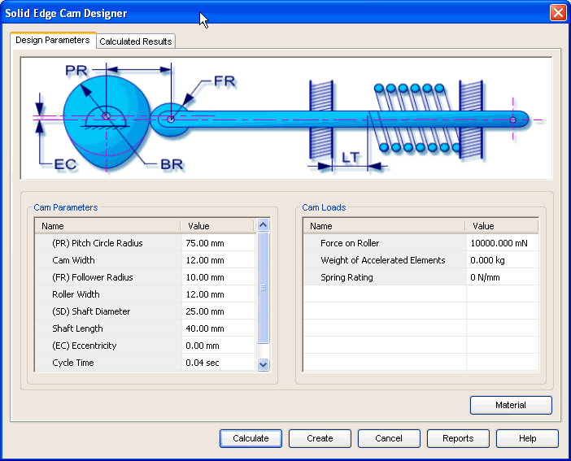

Cam Design Parameters tab
The Design Parameters tab provides the options you use to enter details required for the design of cam. This tab consists of 4 areas.

- Graphic area
-
This area contains a graphic representation indicating the terminology of a cam.
- Cam parameters
-
Use this area to define the base parameters for the cam design.
- Cam Loads
-
Use this area to define inputs for strength calculations for the cam.
- Material
-
Use the Material button to select the material of the cam.